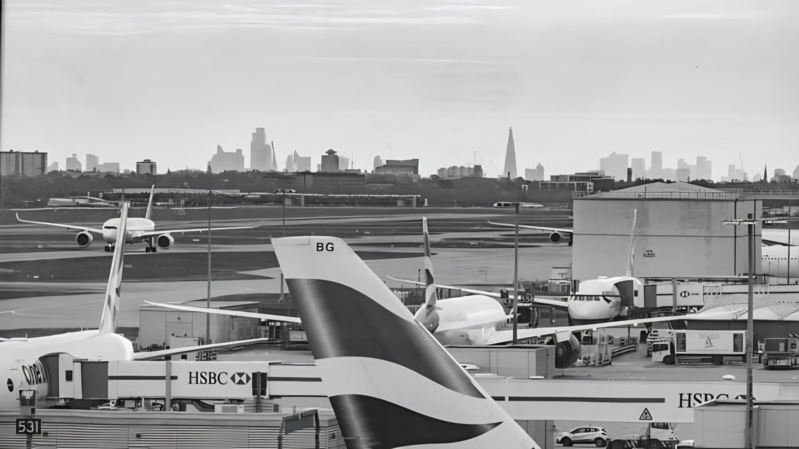
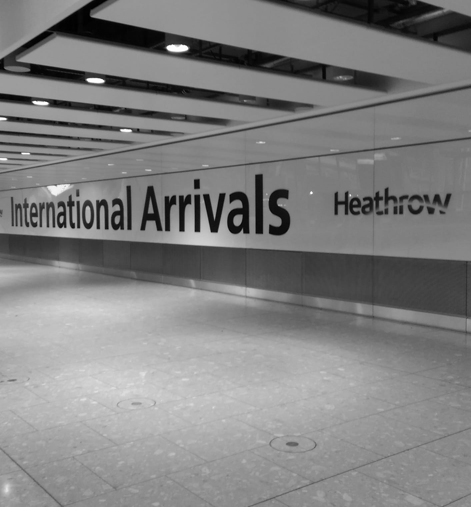

The capital's most central airport — ideal for business travellers and those seeking quick connections to London's financial district.
London City Airport occupies a unique position as the only airport situated within the boundaries of Greater London, located in the Royal Docks area of Newham just four miles east of the City of London and six miles from Canary Wharf. For business travellers, it offers an unmatched combination of proximity and efficiency — with check-in times as short as 20 minutes before departure for domestic and select European routes.
The airport serves a concentrated network of European business destinations including Amsterdam, Dublin, Frankfurt, Zürich, Edinburgh and Paris, operated by carriers including British Airways, Aer Lingus, KLM and Wizz Air. Its single runway and compact terminal make the passenger experience straightforward and fast — a sharp contrast to the scale and complexity of Heathrow or Gatwick.
A chauffeur transfer to London City Airport is particularly well-suited to the type of passenger the airport serves. Many of our clients travelling through City Airport are senior executives, finance professionals and frequent business travellers for whom punctuality and discretion are non-negotiable. Trouv's chauffeurs understand the pace and expectations of this clientele, and your car will always be ready exactly when and where you need it.
For arrivals, we offer full meet-and-greet service inside the terminal and flight monitoring as standard. The compact size of London City means your journey from the aircraft to the vehicle is significantly shorter than at other London airports, making for a fast and efficient overall transit experience.
Book a London City Transfer London City Official Website ↗